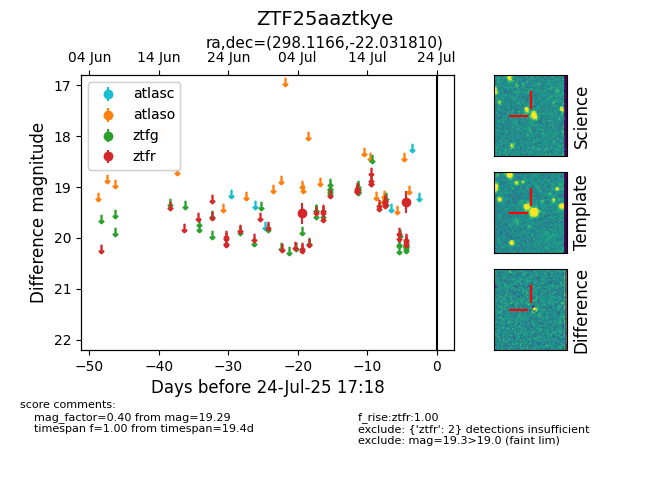

Target ZTF25aaztkye at 2025-07-24 17:18, see:
FINK: fink-portal.org/ZTF25aaztkye
Lasair: lasair-ztf.lsst.ac.uk/objects/ZTF25aaztkye
ALeRCE: alerce.online/object/ZTF25aaztkye
alt names
ZTF25aaztkye (ztf,fink)
coordinates:
equatorial (ra, dec) = (298.1166,-22.03181)
galactic (l, b) = (18.9532,-22.83936)
photometry
last ztfr=19.29
2 ztfr detections
